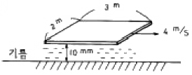
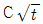

소방설비산업기사(기계) (2005-05-29 기출문제)
1과목: 소방원론
1. 프로판가스의 특성에 대한 설명으로 옳은 것은?
- 누출된 프로판가스는 공기보다 가벼워 천장에 모인다.
- 가스비중은 약 0.5 이다.
- 연소범위는 약 2.2∼9.5 V%이다.
- 프로판가스는 LNG의 주성분이다.
(정답률: 64%)

2. 화재의 원인이 되는 발화원으로 볼 수 없는 것은?
- 화학적인 열
- 전기적인 열
- 기화열
- 기계적인 열
(정답률: 79%)
3. 다음은 분무연소에 대한 설명이다. 잘못된 것은?
- 액체연료를 수μm ~ 수백μm 크기가 액적으로 미립화시켜 연소시킨다.
- 휘발성이 낮은 액체연료의 연소가 여기에 해당된다.
- 점도가 높은 중질유의 연소에 많이 이용되고 있다.
- 미세한 액적으로 분무시키는 이유는 표면적은 작게 하여 공기와의 혼합을 좋게하기 위함이다.
(정답률: 24%)
4. 건물에서 초기의 발화 위험물에 대한 화재하중을 감소시키는 방법은?
- 방화구획의 세분화
- 내장재 불연화
- 소화시설의 증강
- 건물 높이의 제한
(정답률: 25%)
5. 다음중 니트로셀루로오스에 대한 설명으로 잘못된 것은?
- 질화도가 낮을수록 위험성이 크다.
- 알코올, 물 등으로 적신상태로 보관한다.
- 화약의 원료로 사용된다.
- 충분히 정제되지 않고 산성분이 남아 있는 것이 더 위험하다.
(정답률: 69%)
6. 다음 중 제6류 위험물의 공통성질이 아닌 것은?
- 비중이 1보다 작으며 물에 녹지 않는다.
- 산화성물질로 다른 물질을 산화시킨다.
- 자신들은 모두 불연성 물질이다.
- 대부분 분해하며 유독성가스를 발생하여 부식성이 강하다.
(정답률: 25%)
7. 불소계 습윤제를 기제로 한 것으로 유류화재 진압에 뛰어난 소화력을 가진 포소약제로 일명 Light water라고 불리는 것은?
- 수용막포소화약제
- 단백포소화약제
- 합성계면활성제포소화약제
- 수용성액체용포소화약제
(정답률: 61%)
8. 다음 중 열의 전달형태를 나타내는 법칙이 아닌 것은?
- 프리에의 법칙
- 스테판, 볼츠만의 법칙
- 뉴턴의 냉각법칙
- 그레항의 법칙
(정답률: 53%)
9. 방재센타에 대한 설명 중 옳지 않은 것은?
- 피난인원의 유도를 위하여 피난층으로부터 가능한한 높은 위치에 설치한다.
- 연소위험이 없도록 하고 충분한 면적을 갖도록 한다.
- 자동화재탐지설비의 수신기에는 경계구역 부근에 대한 소방설비 등의 위치를 명시한다.
- 소화설비 등의 기동에 대하여 감시제어기능을 갖추어야 한다.
(정답률: 70%)
10. 실내 피난계단의 구조는 내화구조로 하고, 어디까지 직접 연결되도록 하는가?
- 피난층 또는 옥상
- 피난층 또는 지상
- 개구부 또는 옥상
- 개구부 또는 지상
(정답률: 82%)
11. 고층 건축물의 피난계획이 잘못된 것은?
- 피난동선의 일상생활 동선과의 분리
- 평면계획에 대한 복잡성 지양
- 2방향 피난로 확보
- 막다른 골목 및 미로 지양
(정답률: 27%)
12. 목조건물에 화재가 발생하여 잔화정리를 할 때의 주의사항으로 잘못된 것은?
- 타서 떨어지기 쉬운 물건에 주의한다.
- 불티가 남기 쉬운 천정 속을 주의한다.
- 도괴된 건물 밑은 위험하므로 살피지 않는다.
- 연소된 인접 건물의 지붕 등의 잔화정리에도 주의한다.
(정답률: 79%)
13. 방화구역의 효과와 관계 없는 것은?
- 화열의 제한
- 인명의 안전대피
- 화재하중의 감소
- 연기의 확산방지
(정답률: 45%)
14. 후래쉬 오버의 지연대책으로 틀린 것은 ?
- 두께가 얇은 내장재료를 사용한다.
- 열전도율이 큰 내장재료를 사용한다.
- 주요구조부를 내화구조로 하고 개구부를 적게 설치한다.
- 실내 가연물은 소량씩 분산 저장한다.
(정답률: 48%)
15. 휘발성 물질에 불꽃을 대었을때 연소가 일어나는 최저 온도는?
- 인화점
- 발화점
- 연소점
- 자연발화점
(정답률: 88%)
16. 불꽃의 온도가 1500°C 일 때 색깔은?
- 황색
- 황적색
- 백적색
- 휘백색
(정답률: 89%)
17. 자연 발화의 조건이 아닌 것은?
- 주위의 온도가 높다.
- 열전도율이 낮다.
- 표면적이 넓다.
- 발열량이 적다.
(정답률: 62%)
18. 다음 중 연소재료로 볼 수 있는 것은?
- C
- N2
- 불활성기체
- CO2
(정답률: 53%)
19. 금속분 화재시 주수소화하면 않되는 가장 큰 이유는?
- 산소가 발생하여 연소를 돕기 때문에
- 유독가스가 발생하여 인체에 해를 주기 때문에
- 질소가 발생하여 소화자가 질식할 우려가 있으므로
- 수소가 발생하여 연소를 더욱 촉진시키므로
(정답률: 50%)
20. 연소가 이루어지기 위한 구비조건과 관계가 없는 것은 ?
- 점화원
- 가연성 물질
- 착화온도
- 산소
(정답률: 56%)
2과목: 소방유체역학
21. 어떤 물체가 공기 중에서 무게는 40 N이고, 물 속에서 무게는 23 N이다. 이 물체의 비중은?
- 2.35
- 2.54
- 3.33
- 4.32
(정답률: 28%)
22. 그림과 같이 점성계수가 0.26 N·s/m2 인 기름위에 판을 수평으로 4 m/s의 속도로 잡아당길 때 필요한 힘은 몇 N인가? (단, 속도분포는 선형이다.)

- 54
- 127
- 341
- 624
(정답률: 20%)
23. 안지름 2 cm의 원관 내에 물을 흐르게 하여 층류 상태로부터 점차 유속을 빠르게 하여 난류 상태로 될 때 한계유속은 몇 cm/s 인가? (단, 물의 동점성계수는 0.01 cm2/s, 임계레이놀즈수는 4000 이다)
- 10
- 15
- 20
- 40
(정답률: 56%)
24. 표면장력의 차원은 어느 것인가? (단, F:무게, M:질량, L:길이, T:시간의 차원을 뜻한다.)
- ML-1
- MLT-2
- FL
- MT-2
(정답률: 6%)
25. 단면적 0.003 m2인 소방호스가 단면적 0.0008 m2인 곧은 노즐에 연결되어 있고, 유량은 0.012 m3/s이다. 운동량의 변화 때문에 생긴 반발력은 몇 N 인가? (단, 물의 밀도는 997 kg/m3 이다.)
- 120
- 131
- 181
- 329
(정답률: 23%)
26. 수평원형관의 상류측 단면 안지름이 200 mm이고 하류측 단면 안지름이 400 mm인 점차 확대관이 있다. 상류측 물의 유속과 압력이 각각 1.5 m/s, 110 kPa 이면 하류측 단면에서의 압력은 몇 kPa 인가?
- 111
- 113
- 115
- 117
(정답률: 27%)
27. 다음 중 연속 방정식이 아닌 것은? (문제오류로 복원중입니다. 정확한 보기내용을 아시는 분께서는 오류신고를 통하여 내용 작성 부탁드립니다. 정답은 4번입니다.)
- 복원중1A1V1=복원중2A2V2
- A1 V1 = A2 V2
 복원중
복원중 복원중
복원중
(정답률: 83%)
28. 할로겐 화합물 소화약제 중 상온상압에서 기체상태인 것은?
- 할론 1301, 1211
- 할론 1301, 1011
- 할론 1301, 2402
- 할론 1211, 1011
(정답률: 65%)
29. 다음의 원소군 중 할로겐족 원소에 속하는 것은?
- F, B, Cl, Si
- F, Br, Cl, I
- Si, Br, I, At
- He, N2, F, Br
(정답률: 85%)
30. 펌프의 급정지, 밸브의 급격한 개폐 등의 원인으로 배관내에 발생되기 쉬운 현상은?
- 서징 현상
- 수격 작용
- 공동 현상
- 비회전 현상
(정답률: 69%)
31. 다음의 유량 측정장치 중 관의 단면에 축소부분이 있어서 유체를 그 단면에서 가속시킴으로써 생기는 압력 강하를 이용하지 않는 것은 ?
- 노즐
- 오리피스
- 로타 미터
- 벤츄리 미터
(정답률: 41%)
32. 펌프의 이상 현상중 허용흡입수두와 가장 관련이 있는 것은?
- 수온상승 현상
- 수격 현상
- 공동 현상
- 서징 현상
(정답률: 35%)
33. 이상기체의 엔탈피가 변하지 않는 과정은?
- 가역단열과정
- 비가역단열과정
- 정압과정
- 교축과정
(정답률: 63%)
34. 모세관의 직경의 비가 2:3:4 인 3개의 모세관 속을 올라가는 물의 높이의 비는?
- 2:3:4
- 2:3:4
- 6:4:3
- 2:4:3
(정답률: 50%)
35. 다음 포소화약제 중 석유탱크에서 유출된 기름으로 인한 유층이 얇은 화재에 소화효과가 가장 좋은 포소화약제는?
- 불화단백포
- 단백포
- 수성막포
- 합성계면 활성제포
(정답률: 29%)
36. 100 mm 관로를 통하여 물을 정확히 10분 동안 계량탱크에 공급하였다. 탱크의 늘어난 무게가 95.3 kN이다. 이 관로를 흐르는 평균유량은 몇 m3/s 인가? (단, 물의 밀도는 ￠= 1000 kg/m3 이다.)
- 0.0162
- 0.0972
- 0.162
- 0.972
(정답률: 19%)
37. 판의 절대온도 T가 시간 t에 따라 T=

로 주어진다. 여기서 C 는 상수이다. 이 판의 흑체방사도는 시간에 따라 어떻게 변하는가 ? (단, ￡는 Stefan-Boltzman 상수이다.)- σC4
- σC4 t
- σC4 t2
- σC4 t4
(정답률: 29%)
38. 분말소화약제에 대한 설명으로 옳지 않은 것은 ?
- 호스릴방식 분말소화설비에 1종 분말소화약제를 사용하고자 할 때의 저장량은 노즐 1개당 50㎏ 이상 이어야 한다.
- 2종 분말소화약제는 A급 및 B급 화재에 적응력이 있다.
- 차고 또는 주차장에 설치하는 분말소화 설비의 소화약제는 3종 분말소화약제에 한한다.
- 4종 분말소화약제 1㎏당 저장용기의 내용적은 1.25ℓ이상 있어야 한다.
(정답률: 35%)
39. 클라지우스 부등식이 기술하는 열역학 법칙은?
- 제 0 법칙
- 제 1 법칙
- 제 2 법칙
- 제 3 법칙
(정답률: 60%)
40. 지름 200 ㎜인 수평원관 내를 어떤 액체가 층류로 흐를 때 관벽에서의 전단응력은 150 Pa이다. 관의 길이가 30 m 일때 압력강하 ΔP는 몇 kPa 인가 ?
- 70
- 80
- 90
- 100
(정답률: 45%)
3과목: 소방관계법규
41. 화재현장에서의 피난 등을 체험 할 수 있는 소방체험관의 설립·운영권자는 누구인가?
- 행정자치부장관
- 시·도지사
- 소방본부장 또는 소방서장
- 한국소방안전협회
(정답률: 41%)
42. 소방기관이 소방업무를 수행하는 데에 필요한 인력과 장비 등에 관한 기준은 어느 령으로 정하는가?
- 대통령령
- 행정자치부령
- 시·도지의 조례
- 건설교통부령
(정답률: 34%)
43. 소방시설공사에 관한 발주자의 권한을 대행하여 소방시설 공사가 설계도서 및 관계법령에 따라 적법하게 시공되는지 여부의 확인을 수행하는 영업은?
- 소방시설설계업
- 소방시설공사업
- 소방공사감리업
- 소방시설관리업
(정답률: 32%)
44. 화재의 예방조치명령 사항으로서 옳지 않은 것은?
- 함부로 버려두거나 그냥 둔 위험물에 대한 폐기처리
- 화기의 우려가 있는 재의 처리
- 불장난, 모닥불, 흡연 및 화기취급의 금지 또는 제한
- 화재 예방상 위험하다고 인정되는 행위의 금지 또는 제한
(정답률: 44%)
45. 다음 중 자동식소화기 설치대상은?
- 지정문화재
- 가수시설
- 터널
- 아파트
(정답률: 75%)
46. 불을 사용하는 설비의 관리에 있어서 화재예방상 준수 할 사항은 다음 중 어느 것으로 정하는가?
- 대통령령
- 행정자치부령
- 시·도지사령
- 소방본부장 또는 소방서장령
(정답률: 56%)
47. 1급 방화관리대상물이 아닌 것은?
- 연면적 20,000m2 인 문화집회 및 운동시설
- 15층인 복합건축물
- 21층인 아파트로서 300세대인 것
- 가연성가스를 2,000톤 저장·취급하는 시설
(정답률: 65%)
48. 방화관리자 또는 공동방화관리자를 선임할 때 방화관리자 선임신고서에 첨부할 서류에 해당하지 않는 것은?
- 소방시설관리사 자격수첩
- 자체소방대장임을 증명하는 서류
- 소방안전관리학과를 졸업한 경우 졸업증명서
- 방화관리자를 겸임할 수 있는 안전관리자로 선임된 사실을 증명할 수 있는 서류
(정답률: 19%)
49. 다음 중 위험물의 유별 성질에 대한 설명으로 틀린 것은?
- 제1류 : 산화성 고체
- 제2류 : 가연성 고체
- 제4류 : 인화성 액체
- 제6류 : 자기반응성 물질
(정답률: 94%)
50. 다음 중 옥외탱크저장소에 설치하는 방유제에 대한 설명으로 틀린 것은?
- 방유제내의 면적은 6만m2 이하로 할 것
- 방유제의 높이는 0.5m 이상 3m 이하로 할 것
- 방유제내에 설치하는 옥외저장탱크의 수는 10 이하로 할 것
- 방유제는 철근콘크리트 또는 흙으로 만들것
(정답률: 58%)
51. 다음의 소방시설 중 하자보수보증기간이 2년인 것은?
- 무선통신보조설비
- 자동식소화기
- 자동화재탐지설비
- 옥외소화전설비
(정답률: 85%)
52. 정전기를 제거하기 위해서는 공기중의 상대습도를 얼마로 하면 좋은가?
- 40% 이상
- 50% 이상
- 60% 이상
- 70% 이상
(정답률: 69%)
53. 지정수량의 몇 배 이상의 위험물을 취급하는 제조소, 일반 취급소에는 화재예방을 위한 예방규정을 정하여야 하는가?
- 10배
- 20배
- 30배
- 50배
(정답률: 85%)
54. 화재, 재난·재해 그 밖의 위급한 상황에서 발생한 응급환자를 응급처치 하거나 의료기관에 이송하기 위한 구급대의 운영, 편성권자가 아닌 것은?
- 소방본부장
- 소방서장
- 행정자치부장관
- 보건복지부장관
(정답률: 50%)
55. 승강기 등 기계장치에 의한 주차시설로서 자동차 몇대 이상 주차할 수 있는 시설을 할 경우, 소방본부장 또는 소방서장의 건축허가등의 동의 대상이 되는가?
- 10대
- 20대
- 30대
- 40대
(정답률: 78%)
56. 아래의 용어 설명 중 옳은 것은?
- "소방시설"이라 함은 소화설비桀경보설비桀피난설비桀 소화용수설비 그 밖에 소화활동설비로서 대통령령이 정하는 것을 말한다.
- "소방시설등"이라 함은 소방시설과 비상구 그 밖에 소방 관련 시설로서 행정자치부장관령이 정하는 것을 말한다.
- "특정소방대상물"이라 함은 소방시설을 설치하여야 하는 소방대상물로서 방재청장령이 정하는 것을 말한다.
- "소방용기계·기구"라 함은 소화기(消火器)·소화약제(消化藥劑)·방염도료(防炎塗料) 그 밖에 소방시설을 구성하는 기기로서 시ㆍ도지사령이 정하는 것을 말한다.
(정답률: 36%)
57. 소방기본법상 국제구조대의 편성·운영에 대한 설명으로 맞지 않는 것은?
- 행정자치부장관이 국제구조대를 편성·운영한다.
- 구조반, 탐색반, 보도지원반, 의료반 등을 둔다
- 직할구조대를 두는 경우에는 직할구조대의 인력 및 장비를 중심으로 편성·운영한다.
- 국제구조대의 편성·운영에 관한 사항은 행정자치부 장관이 정한다.
(정답률: 48%)
58. 화재 발생시 인명피해가 발생할 우려가 높은 불특정다수인이 출입하는 다중이용업이 아닌 것은?
- 찜질방업
- 고시원업
- 산후조리원업
- 백화점
(정답률: 36%)
59. 다음 화재의 조사에 관한 설명 중 옳은 것은?
- 소방본부장 또는 소방서장은 화재조사 시 어떠한 경우라도 관계인에 대하여 필요한 보고 또는 자료제출을 명할 수 없다.
- 소방본부장 또는 소방서장은 수사기관이 방화 또는 실화의 혐의가 있어서 이미 피의자를 체포하였을 때에는 화재조사를 할 수 없다.
- 화재조사는 소화활동이 종료된 후에 실시한다.
- 화재피해조사는 인명피해조사와 재산피해조사로 구분한다.
(정답률: 43%)
60. 방화관리자의 실무교육을 교육실시 몇일 전까지 실무교육 대상자에게 통보를 해야 하는가?
- 7일
- 15일
- 10일
- 30일제
(정답률: 37%)
4과목: 소방기계시설의 구조 및 원리
61. 특별피난계단의 부속실에 제연설비를 하려고 한다. 자연배출식 수직풍도의 내부단면적이 5m2일 경우 송풍기를 이용한 기계배출식 수직풍도의 최소 내부단면적(m2)은?
- 1m2
- 1.25m2
- 1.5m2
- 2m2
(정답률: 50%)
62. 옥외소화전설비의 유량측정장치는 펌프 정격토출량의 몇 %까지 측정할 수 있어야 하는가?
- 140
- 150
- 175
- 185
(정답률: 74%)
63. 다음 가운데 퓨지블링크형 스프링클러 헤드의 구성요소와 관계 없는 것은?
- 용융메탈
- 디프렉타
- 글라스벌브
- 프레임
(정답률: 15%)
64. 공기포 소화설비에 있어서 공기포 소화약제 혼합장치의 기능을 바르게 설명한 것은?
- 소화약제의 혼합비를 일정하게 유지하기 위한 것
- 유수량을 일정하게 유지하기 위한 것
- 유수압력을 일정하게 유지하기 위한 것
- 소화약제의 성분비를 일정하게 유지하기 위한 것
(정답률: 29%)
65. 스프링클러 헤드의 설치제외 장소가 아닌 곳은?
- 계단실, 파이프 닥트
- 통신기기실, 전자기기실
- 변압기실, 변전실
- 불연재료인 천장과 반자 사이가 2m 이상인 부분
(정답률: 27%)
66. 다음 중 배관용 탄소강관(KSD3507)에 대한 설명으로 옳지 않은 것은?
- 사용압력이 10kgf/cm2이하의 물과 공기의 배관에 많이 사용된다.
- 주철관에 비해서 내식성이 크다.
- 관 1개의 길이는 KS규격이 6m이다.
- 일반적으로 호칭 지름 50A 이하의 관은 양끝에 나사를 내거나 플레인 엔드로 한다.
(정답률: 32%)
67. 이산화탄소 삼중점의 온도 및 압력은?
- 15℃, 53kgf/cm2
- -15℃, 21kgf/cm2
- 31℃, 75.2kgf/cm2
- -56.3℃, 5.3kgf/cm2
(정답률: 28%)
68. 분말 소화설비의 방호대상이 될 수 없는 것은?
- cellulose nitrate 섬유소 저장고
- 목재 창고
- 방직공장
- 변전실
(정답률: 12%)
69. 제연설비에 설치되는 다음 기기 중 자동화재감지기와 연동되지 않아도 되는 것은?
- 가동식의 벽
- 댐퍼
- 과압조절용 댐퍼 조절장치
- 배출기
(정답률: 15%)
70. 할론(Halon) 소화설비에 사용되는 할로겐 화합물은 메탄 및 에탄의 H 대신에 할로겐족 원소를 치환하여 제조한 것이다. 할로겐 원소가 아닌 것은?
- F
- CO2
- Br
- Cl
(정답률: 77%)
71. 축압식 분말소화기에 관한 옳은 설명은?
- 압력원이 별도의 용기에 저장되므로 안전하다.
- 장기간 보관시에도 가스누설이 적다.
- 가압가스 저장용기는 용접식, 조임금구식이 있다.
- 가스누설로 인한 압력강하를 방지하기 위해 주기적인 압력점검이 필요하다.
(정답률: 53%)
72. 연결살수 설비에서 하나의 송수구역에 설치하는 개방형의 헤드수는 몇 개 이하인가?
- 5개
- 10개
- 15개
- 20개
(정답률: 78%)
73. 옥내소화전 설비에서 소방펌프 자동차로 부터 그 설비에 송수할 수 있는 송수구에 대한 설명 중 맞지 않는 것은?
- 지면으로부터 높이가 0.5미터 이상 1미터 이하에 설치
- 송수구로부터 주배관에 이르는 연결배관에는 개폐밸브를 설치하여야 한다.
- 구경 65mm의 쌍구형, 단구형으로 하여야 한다.
- 송수구 가까운 부근에 자동배수밸브를 설치한다.
(정답률: 31%)
74. 다음은 연결살수설비가 설치된 방호구획의 헤드수가 8개인 경우 송수구의 설치상태이다. 옳지 않은 것은?
- 송수구는 쌍구형으로 설치하였다.
- 송수구는 지면으로부터 1.2m 높이에 설치하였다.
- 송수구로부터 주배관에 이르는 배관에는 개폐밸브를 설치하지 아니하였다.
- 소방자동차의 접근이 가능하고 노출된 장소에 설치하였다.
(정답률: 34%)
75. 바닥 면적이 200m2 이상인 건축물에 옥내 포소화전 방식 또는 호스릴 방식의 약제저장량 산출 공식은? (단, Q : 포 소화약제량, N : 호스접결구수, S : 포 소화약제 사용농도)
- Q = N x S x 5000ℓ
- Q = N x S x 6000ℓ
- Q = N x S x 7000ℓ
- Q = N x S x 8000ℓ
(정답률: 58%)
76. 옥상에 설치되어 있는 소화설비 전용 물탱크에 수원을 공급하기 위하여 양정 25m, 송출량 30ℓ/s인 소형 급수펌프를 설치하였을 경우 본 급수펌프의 수동력은 몇 kw인가? (단, 유체의 밀도는 ρ= 998 kg/m3 이다.)
- 8.34 kw
- 9.34 kw
- 7.34 kw
- 10.34 kw
(정답률: 40%)
77. 알람체크밸브(Alarm Check Valve)가 동작하여 작동 중인 경우에 폐쇄상태에 있는 것은?
- 1차측 게이트밸브
- 시험밸브
- 압력게이지 밸브
- 경보용 볼밸브
(정답률: 28%)
78. 길이가 5m인 환봉에 인장하중을 가했을 때 그 길이가 5.3m로 되었다면 그 변형율은?
- 0.3
- 0.06
- -0.3
- -0.06
(정답률: 46%)
79. 소화능력단위가 B급화재를 기준으로 할 경우 얼마 이상을 대형소화기라 하는가?
- 10
- 20
- 30
- 40
(정답률: 73%)
80. 스프링클러 헤드 가운데 드라이 펜던트 헤드(dry pendenttype)를 옳지 않게 설명한 것은?
- 헤드가 부착되는 부분인 드롭니플에는 물이 들어가지 못하도록 되어 있다.
- 건식밸브 2차측으로 통수될 때 개방되지 않은 헤드를 보호하기 위하여 고안된 것이다.
- 헤드와 가지관 사이의 공간에 공기를 주입하여 헤드 전단에 물의 고임을 방지하는 구조이다.
- 건식설비는 동파의 우려가 있는 곳에 설치하는 경우가 많으므로 상향식, 하향식 구분없이 이 헤드를 사용해야한다.
(정답률: 45%)